10 部片单 · 恐怖 / 科幻 / 惊悚 / 悬疑 / 剧情
| # | 片名 | 类型 | 评分 / 状态 |
|---|---|---|---|
| 01 | 奥德赛 | 剧情 / 史诗 | 8.6 / 94% / 8.5 |
| 02 | 上帝是吗？ | 惊悚 / 复仇 | 97% / 86% / 120 篇影评 |
| 03 | 调音师 | 惊悚 / 犯罪 | 94% / 94% / 剧情片处女作 |
| 04 | 鬼玩人：炼狱 | 恐怖 / 血浆 | 71% / 7.0 / 《害虫》瓦尼切克 |
| 05 | 极限审判 | 科幻 / 悬疑 | 7.3 / 6.2 / 25% |
| 06 | 坠落2：死点 | 惊悚 / 生存 | 9/2 北美 · 9/4 内地 / 6.9 / 斯派瑞兄弟 |
| 07 | 猩疯血雨 | 恐怖 / 动物惊悚 | 78% / 71% / 《狂犬惊魂》 |
| 08 | 黄金时段 | 惊悚 / 犯罪 | 9/25 北美上映 / 威尼斯主竞赛 / 阿里·艾斯特 |
| 09 | 逃出布迪秀 | 恐怖 / 喜剧 | 88% / 77% / 《太多厨师》凯利 |
| 10 | 燃烧吧！爸爸 | 剧情 / 亲情 | 8.2 / 上影节金爵奖主竞赛 / 徐峥 / 曾剑 |
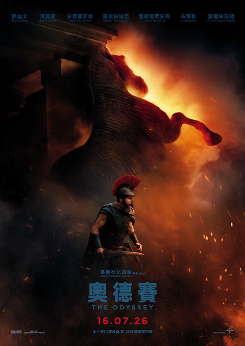
奥德赛 The Odyssey
这一次他不是要回家，是要弄清楚自己还有没有家可回。
剧情梗概
特洛伊战争结束，木马计的始作俑者奥德修斯没能凯旋。此后十年，他被困在归途上——独眼巨人波吕斐摩斯的洞穴、塞壬的歌声、喀耳刻的岛屿、通往冥界的入口。而在伊萨卡，妻子佩涅洛佩和儿子忒勒马科斯正被一群赖在宫里不走的人慢慢耗着。诺兰把这条归途拆成了三条时间线，让「回忆」和「当下」互相撕咬。
亮点
- 影史首部全片使用 IMAX 70mm 胶片摄影机拍摄的故事长片。为克服胶片机体型与噪音问题，剧组与 IMAX 联合研发了新机型「凯利」及隔音罩，首次实现 IMAX 胶片同期对白收音；全片消耗胶片超 640 公里。
- 拒绝绿幕：独眼巨人、塞壬、喀耳刻这些场面以实景搭建与物理特效为底，CG 只做补足。172 分钟里海浪的压迫感是「能尝到咸味」级别。
- 马特·达蒙的奥德修斯不是荷马笔下巧舌如簧的狡黠英雄，而是一个被幸存者愧疚压垮的人——战争最狠的一刀不在战场，在战后每一个失眠的夜晚。
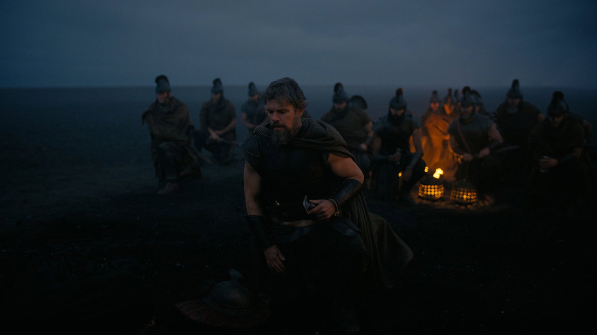
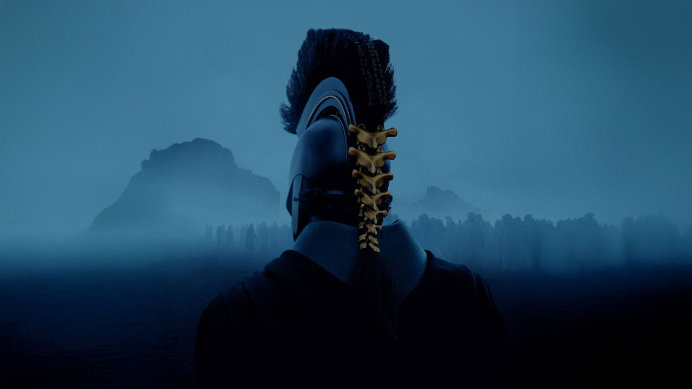
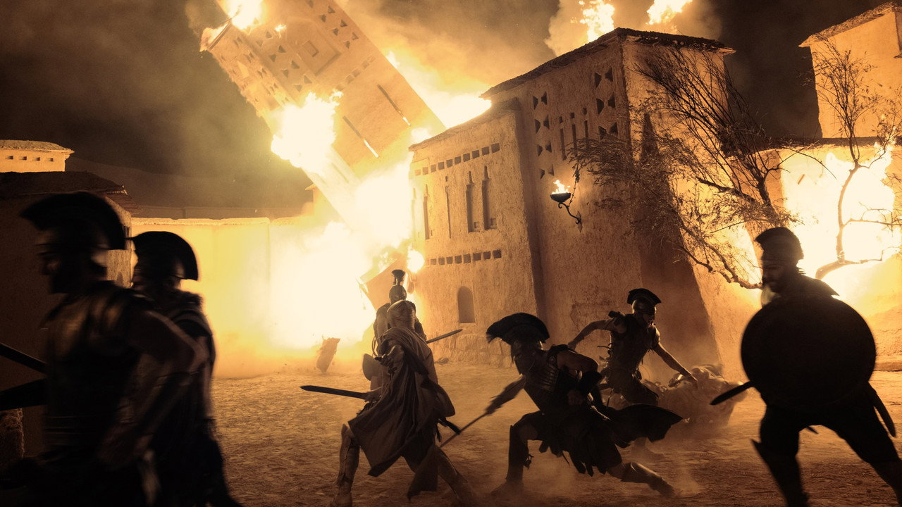
导演与主创 · 他们的历史作品


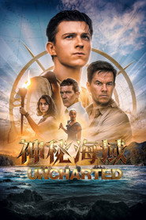
短评（轻微剧透）
诺兰把荷马史诗改写成了一部关于创伤后应激的电影，这是我没想到的方向。木马计在片中被反复回放，不是炫技，而是一次次提醒：奥德修斯这辈子最成功的一次计谋，也是他诅咒的起点。三线并行确实挑人，中间有近一小时会让人怀疑「它到底要讲什么」，但当记忆线和现实线在冥界那场戏合上，前面所有的跳切都变成了同一个动作——一个人在试着把自己重新拼起来。老狗阿尔戈斯认出乔装主人的那一秒，全场安静。结尾他改写了原著的收束方式，争议很大，我站在喜欢这一边。
为什么值得一看
想要一次「必须进影院」的观影体验的人（IMAX 几乎是刚需，普通厅画面裁切严重）；对战争创伤、非线性叙事有兴趣的观众。节奏偏慢、神话改编有文化门槛，想轻松一下的别选它。内地票房已破 6 亿，豆瓣从开分 8.2 一路逆跌到 8.6。
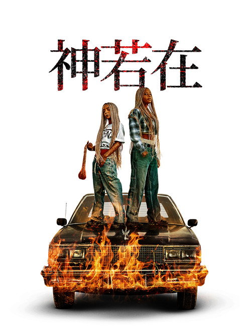
上帝是吗？ Is God Is
母亲临终前只提了一个要求：去把那个男人杀了。
剧情梗概
双胞胎姐妹拉辛和阿娜伊娅小时候被父亲放的一场火烧成重伤——母亲露比被烧得最惨。姐妹俩此后在寄养家庭里辗转长大，一直以为母亲死在那场火里。多年后一封信把她们叫到病床前：露比还活着，正在等死，而她要她们去找那个男人，确认他死透。两人于是开车上路，穿过美国的荒原，去见那个被她们只称作「男人」的父亲。
亮点
- 剧作家阿莱西亚·哈里斯改编自己 2018 年的获奖舞台剧，这是她的长片导演处女作，也是今年烂番茄最高分之一（120 篇影评）。
- 类型混得极其野：希腊悲剧 + 意大利式西部片 + 非裔超现实主义，还带《杀死比尔》式的清算结构；媒体评价它是「《末路狂花》配《乡下人的悲歌》的愤怒」。
- 全黑人班底 + 黑人女导演，在这个体量的制片厂电影里依然是稀罕事。斯特林·K·布朗把父亲拍得像个西部片反派，薇薇卡·A·福克斯和贾奈尔·梦内的配角戏都很狠。
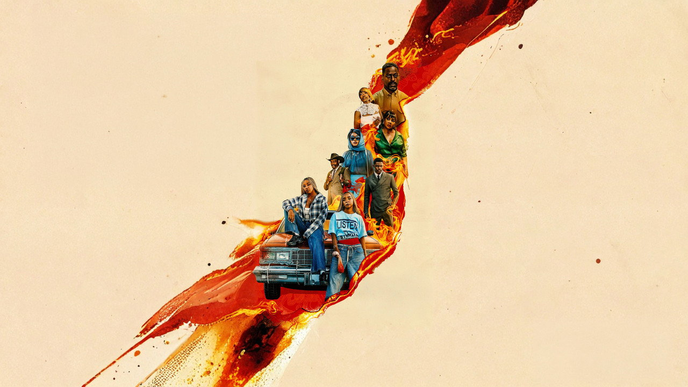
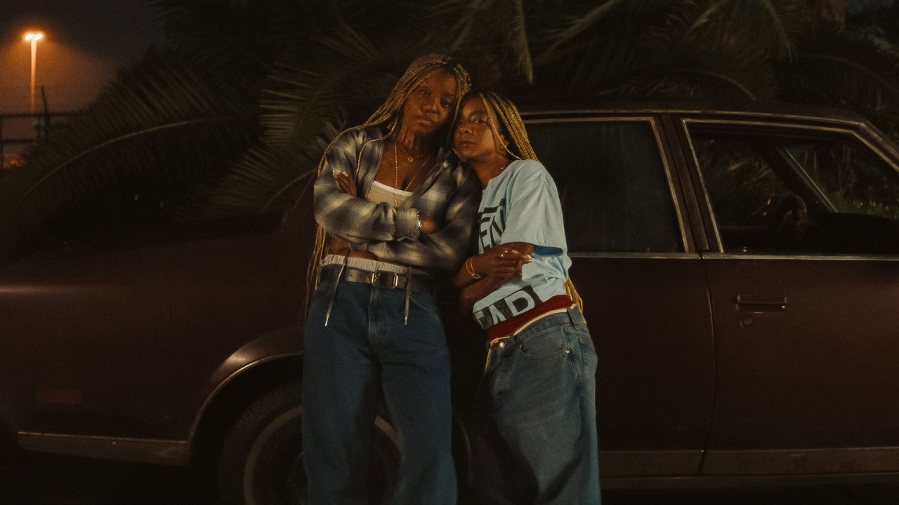
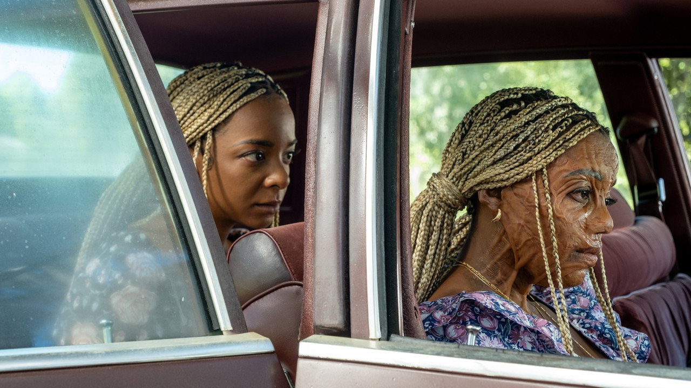
导演与主创 · 他们的历史作品
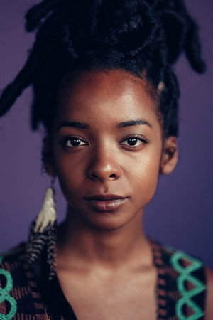

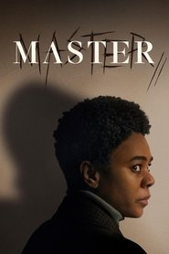
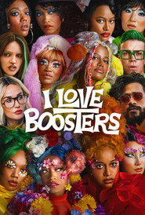
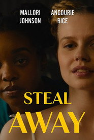
短评（轻微剧透）
片名是个问句，而全片都在逼你回答。母亲自称「God」——她是创造者，也是下达神谕的那一个，于是一场复仇被抬升成了宗教任务：姐妹俩不是在为母亲报仇，是在执行审判。真正戳人的不是杀，是阿娜伊娅——一开始她是被吓坏的那个，最后站到父亲面前的也是她。哈里斯聪明的地方在于没把复仇拍成爽片，每一次动手之后镜头都停在那张被烧毁的脸上，让你看清代价。北美票房只有 500 万（成本 1480 万），典型的叫好不叫座，现在上线 Prime Video 了，别再错过。
为什么值得一看
想看今年最锋利的一次导演处女作；对家庭创伤、类型混搭、强作者风格有好感的人。风格浓烈、台词带着舞台腔，喜欢写实路线的可能会不适应。
调音师 Tuner
他听得见保险箱的锁芯，也听得见自己正在往下滑。
剧情梗概
妮基·怀特是纽约的钢琴调音师，师从父亲的老友哈里。他曾经是天才乐手，如今患上听觉过敏，戴着耳罩过日子，连弹琴都不行。一次哈里忘了保险柜密码，妮基凭耳朵试了出来——这个天赋很快被一伙窃贼盯上。为了替住院的哈里还债，他加入了他们：白天调琴，晚上开保险柜。与此同时，他和音乐学院学生露西越走越近，而露西是他唯一不想撒谎的人。
亮点
- 奥斯卡最佳纪录长片《纳瓦尔尼》导演丹尼尔·罗赫的剧情片处女作，从纪录片转类型片，转得异常稳。
- 利奥·伍德尔（《白莲花度假村》《一天》）挑大梁，《环球邮报》直接说「这是他一个人的秀，有瑞恩·高斯林的松弛，也有马特·达蒙的冷静」。
- 达斯汀·霍夫曼演他的恩师，让·雷诺、利奥·拉兹、托芙·菲尔德舒配戏。声音设计是真正的主角：耳语、脚步、钢琴、心跳全被推到台前，有条件请选杜比全景声厅。
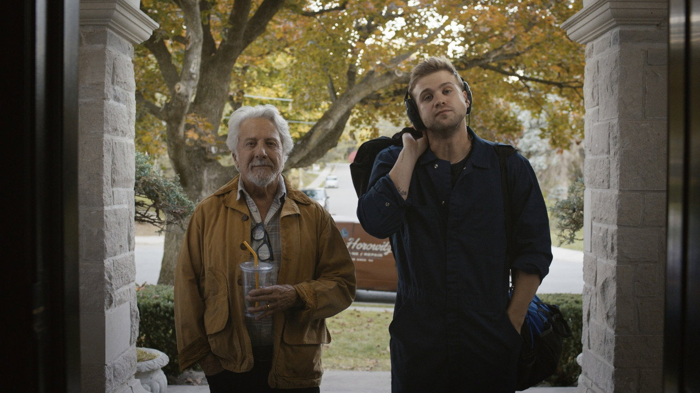
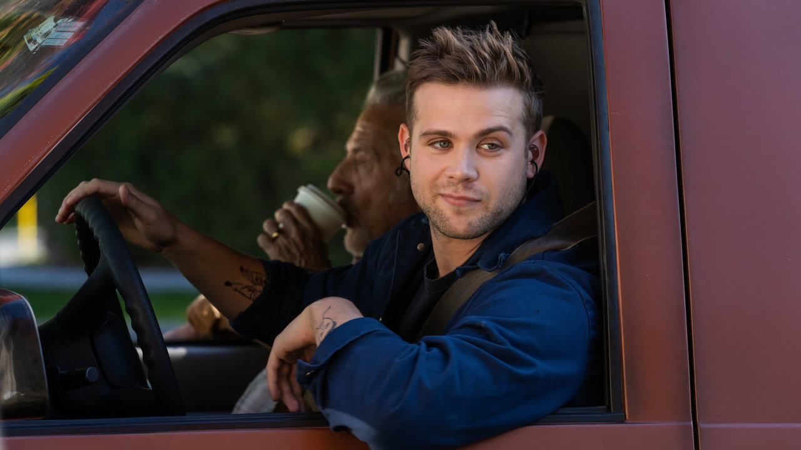
导演与主创 · 他们的历史作品
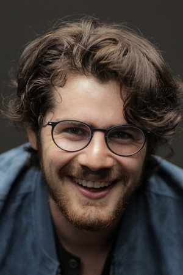
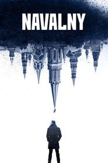
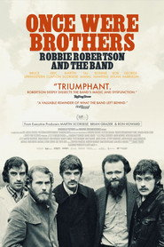
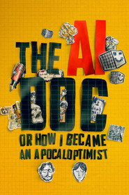
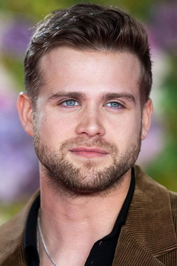
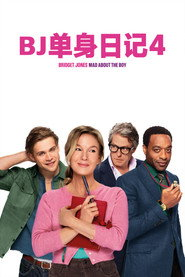


短评（轻微剧透）
它最妙的设计是「天赋即病症」——妮基能开保险柜，靠的正是那个让他没法弹琴的听觉过敏。换句话说，他每用一次这个能力，都是在消费自己的创伤。前半段是轻快的纽约浪漫喜剧，中段才开始变冷，而变冷的方式不是突然，是一次又一次「就这一次」的自我说服。霍夫曼那场心脏病戏之后，整部片的重心悄悄从「要不要干」换成了「还能不能回头」。《卫报》的评价很准：像萨弗迪兄弟放松状态下的电影。结尾不给你廉价的救赎，但给了你一个可以相信的人。
为什么值得一看
想看今年最舒服的一部「成年人类型片」；对声音设计、纽约气质、师生关系有兴趣的人。它不是硬核犯罪片，节奏偏从容，追求强刺激的会嫌温吞。
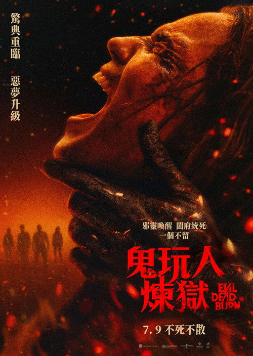
鬼玩人：炼狱 Evil Dead Burn
婚礼上那句「直到死亡把我们分开」，这一回是字面意思。
剧情梗概
爱丽丝的丈夫骤然离世。为了和丈夫的家人一起走出丧亲之痛，她应邀住进公婆的乡间庄园。入住没多久，庄园里开始出现怪事，亲人们的举止一天比一天不对劲。很快，恶灵诅咒席卷整座宅邸，身边的人一个接一个被侵蚀、异化，变成面目焦黑、嗜血狂暴的死徒。而她慢慢发现，当年婚礼上许下的婚姻誓言并没有随丈夫的死消散——它变成了一份缠住整个家族的契约。
亮点
- 法国导演塞巴斯蒂安·瓦尼切克接手，他的上一部《害虫》（ spiders 入侵公寓）是近十年最有效率的生物恐怖片之一，这次把那套「封闭空间 + 逐步升级」的手法整个搬进了鬼玩人宇宙。
- 这一部把诅咒嫁接到「婚姻誓约」上，比单纯的「念了那本书」多了一层情感钩子——你最亲近的人会最先被拿走。
- 系列一贯的实拍传统：血浆、假肢、机械特效为主，CG 只用来擦威亚。索海拉·雅各布（《高潮》《沙丘2》）挑女主角，坦蒂·莱特（《珀尔》）演家人。
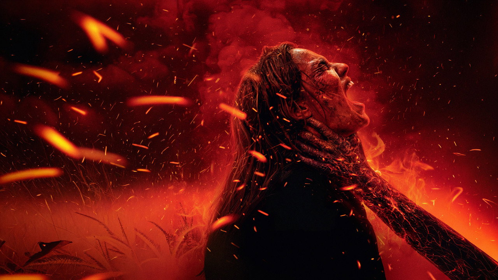
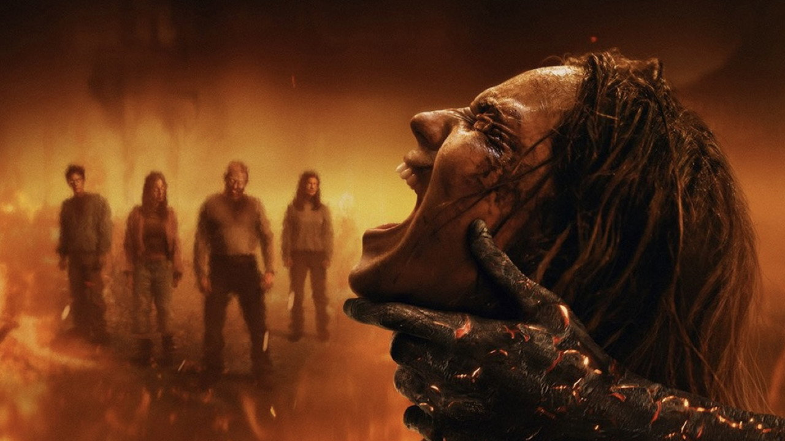
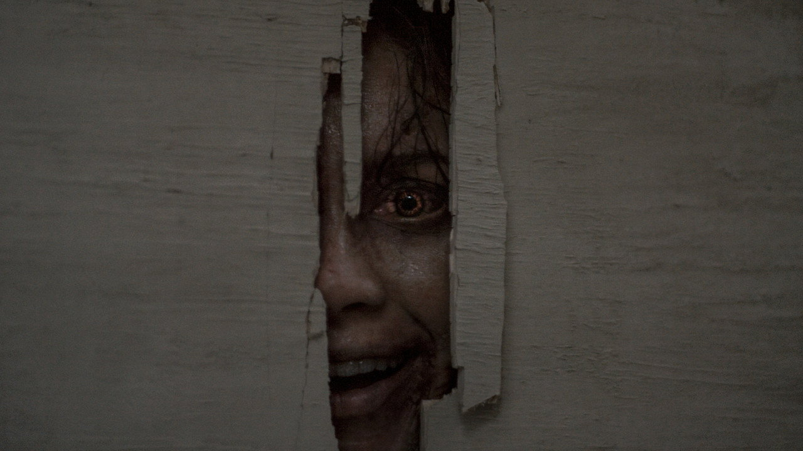
导演与主创 · 他们的历史作品
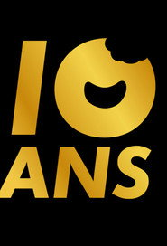
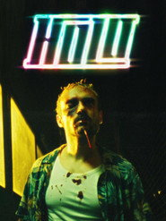
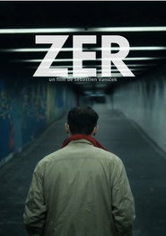
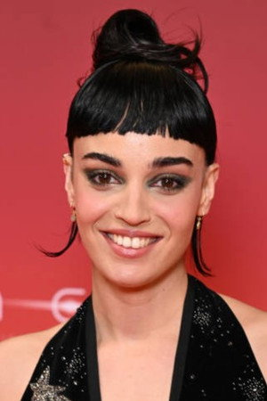

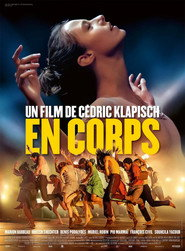


短评（轻微剧透）
评价两极得很典型：影评人 71%，而系列老粉基本满意。它的聪明之处是把「哀悼」当成诅咒的入口——爱丽丝不是为了活命在打，她是在跟一段不肯放她走的婚姻打。中段那场家族晚餐是全片最难受的戏，因为你知道他们还是他们，只是开始说不对的话。第三幕确实收得急，血浆量也大到有点卡通，但如果你想看《鬼玩人》的血统被一个新导演接住、而且接得还挺有自己的味道，这部够格。
为什么值得一看
鬼玩人系列粉丝；喜欢实拍血浆、封闭空间围困的硬核恐怖观众。极度血腥，未成年人及晕血者慎选。
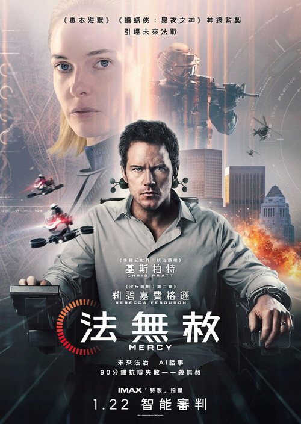
极限审判 Mercy
他亲手推动建立的法庭，判了他 90 分钟死刑。
剧情梗概
2029 年的洛杉矶犯罪率失控，政府引入 AI 司法系统「宽恕」，一套系统同时当法官、陪审团和行刑者——能坐上那张审判椅的，有罪概率都高于 92%。曾大力推动这套系统的警探雷文一觉醒来，发现自己就在椅子上，罪名是杀妻。他只有 90 分钟，用系统自己的「天眼」数据库调监控、查通讯、翻私人数据，证明自己清白；倒计时归零，当庭处决。
亮点
- 提莫·贝克曼贝托夫（《网络谜踪》《解除好友》）把「桌面电影 / Screenlife」那一套搬到了科幻法庭上，全片几乎实时推进。
- 克里斯·帕拉特 + 丽贝卡·弗格森，一个在明处崩溃，一个只在屏幕里出现——两人几乎没有同框，张力全靠窗口对切。
- 设定本身就是最好的钩子：一个全知全能的 AI，为什么还要给你 90 分钟？这个问题，片子到最后才回答。
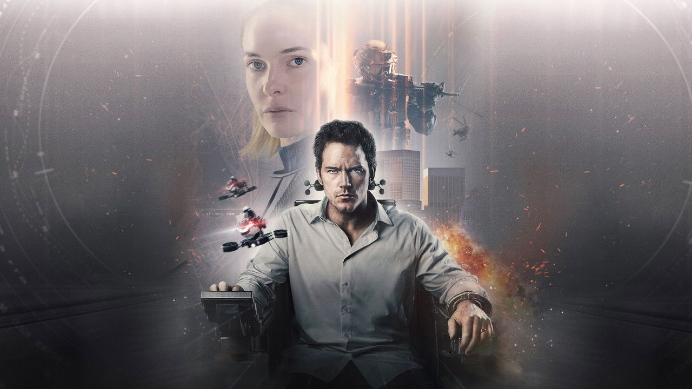
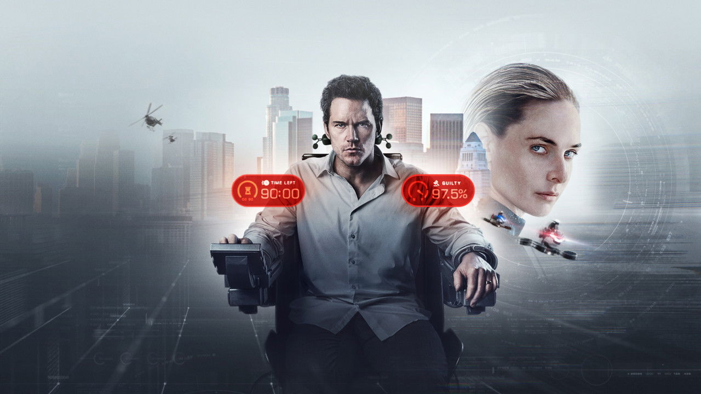
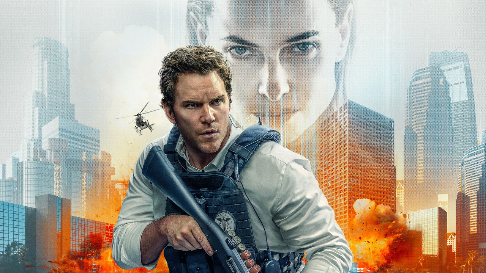
导演与主创 · 他们的历史作品
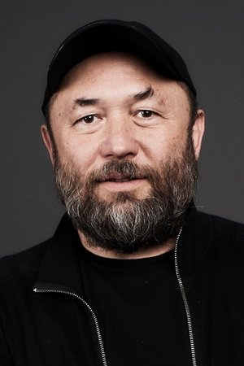
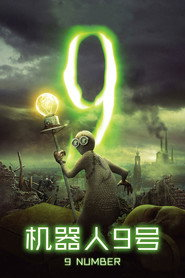


短评（轻微剧透）
这是一部典型的「观众买账、影评人不买账」片——豆瓣 7.3、观众 82%，但烂番茄影评人只有 25%、MTC 仅 34。影评人的意见我认同：逻辑经不起推敲，全知 AI 需要 90 分钟取证本身就荒谬，丽贝卡·弗格森的角色基本是工具人。但我还是推荐它，因为它把「规则制定者被困在自己定的规则里」这个困境拍得极有效——雷文对抗的不是某个反派，是他亲手投票通过的那套系统。90 分钟实时倒计时制造的生理性紧张是真货。看之前把逻辑校验关掉；看之后你大概会开始想，如果换成我，我能拿出什么证据。
为什么值得一看
想看一部不用怎么动脑的高强度科幻惊悚；对 AI 司法、数据隐私议题好奇的人。挑逻辑漏洞的人、追求人物深度的人会失望。
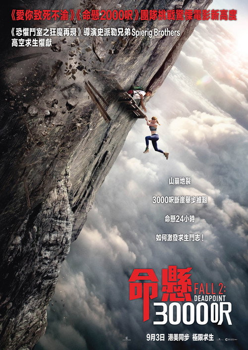
坠落2：死点 Fall 2: Deadpoint
从 610 米的电视塔，换成了 900 米的悬崖栈道。
剧情梗概
姐姐希洛在一场极限挑战中丧生。为了完成她的遗愿，妹妹贾克斯和希洛生前的好友卢斯结伴前往泰国关山山脉——那里有一条封闭三十多年、海拔超过 900 米的高空栈道，是当地人谈之色变的「死亡禁区」。两人刚为眼前的绝景欢呼完，地震引发的山体滑坡就把栈道拦腰截断。暴雨、失温、没信号、补给耗尽，脚下是深不见底的山谷，退路彻底断了。
亮点
- 前作导演斯科特·曼回归编剧，改由斯派瑞兄弟（《前目的地》《电锯惊魂8》）执导，把「单一密闭空间」换成了开阔峡谷。
- 泰国实景拍摄，高空段落坚持实拍，发行了数字 2D、CINITY、4DX 等多个版本；片方那句「恐高症慎入」不是营销话术。
- 前作《坠落》以 300 万美元成本换回 2180 万美元全球票房，是近年投入产出比最高的高概念惊悚片之一。
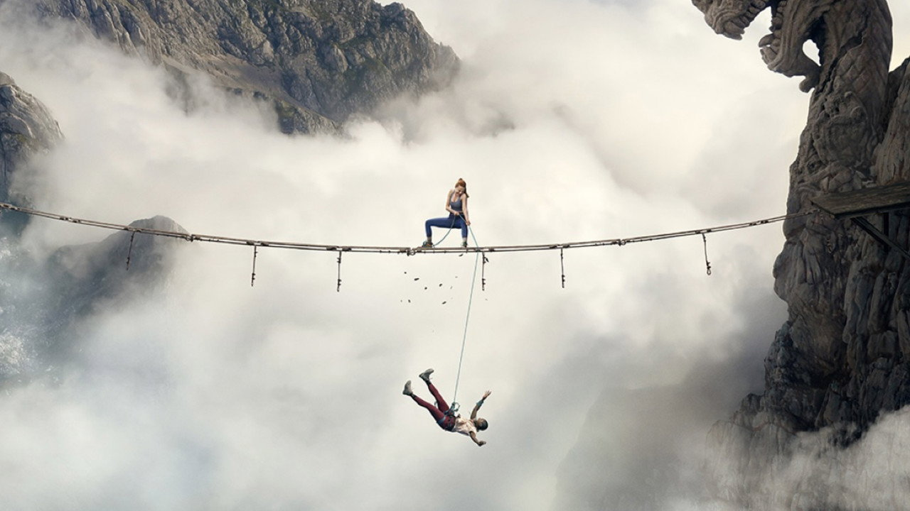
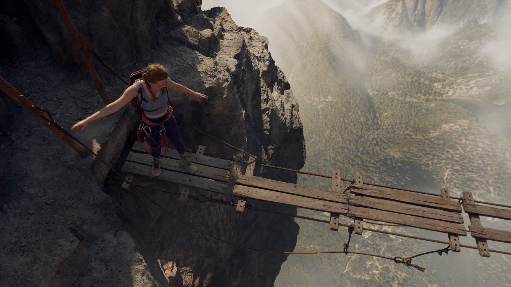
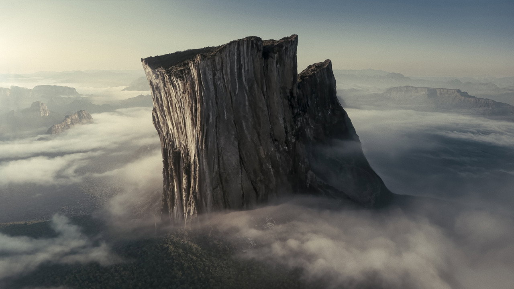
导演与主创 · 他们的历史作品

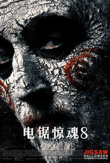
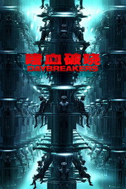
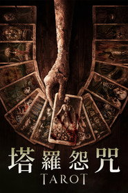
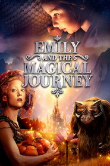
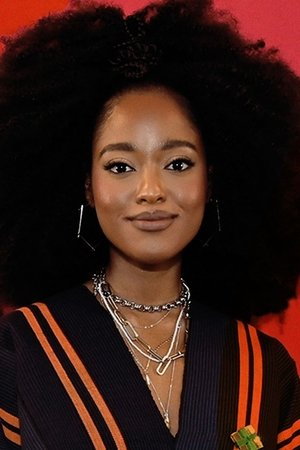
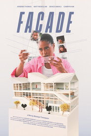
短评（轻微剧透）
它吓人靠的不是鬼，是「你绝对不想身临其境」——比起第一部那座孤零零的高塔，这一部空间更开阔也更多变：峡谷、暴雨、滑坡、瀑布。有人觉得这样反而冲淡了压迫感，我理解；但斯派瑞兄弟显然要的是一种「全景式的惊险」，用更大的视野让你看清人有多渺小。最大的问题是套路感：你看完就知道这两人必有一个要出事，活下来的那个大概率还要再爬一次更高的山。《澎湃新闻》那句吐槽很准——「它不解决恐惧，它只是换一个更高的地方重复恐惧」。但作为一次影院级别的生理体验，它有效。
为什么值得一看
喜欢《坠落》《鲨滩》《127小时》那一挂极限求生的人；想在大银幕上被吓出冷汗的人。恐高症患者请真的绕开。内地 9 月 4 日上映，暂无豆瓣分，建议看首批观众反馈再决定。
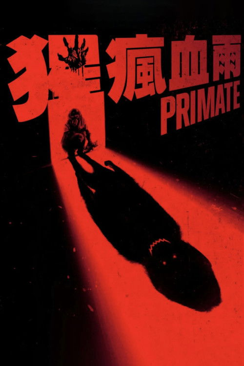
猩疯血雨 Primate
它不是变坏了，它只是生病了。
剧情梗概
夏威夷。大学生露西回家度假，和聋哑作家父亲亚当、妹妹艾琳，以及从小养到大的宠物黑猩猩本团聚。父亲出差后，露西和朋友在泳池开派对，而本在野外被一只患狂犬病的獴咬伤了。抗生素没打成，本跑了出去，然后一夜比一夜更凶。整栋房子里唯一安全的地方，是那个泳池。
亮点
- 约翰内斯·罗伯茨（《鲨海》《生化危机：欢迎来到浣熊市》）回归拿手的「密闭空间 + 单一天然威胁」，89 分钟一刀不多。
- 本不是 CGI——由演员米格尔·托雷斯·翁巴穿着仿真猩猩装，配合机械偶与木偶师共同完成。这个决定是它吓人的根本原因。
- 奥斯卡得主特洛伊·科特苏尔（《健听女孩》）演聋哑父亲：他听不见危险靠近，于是每一个他背对镜头的瞬间都让人屏息。斯蒂芬·金还来客串了一个动物管制员。
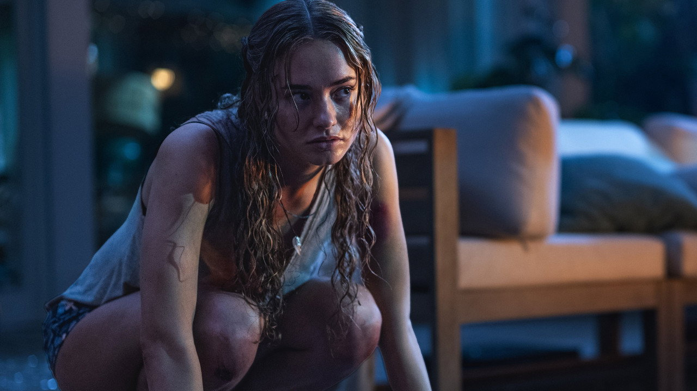
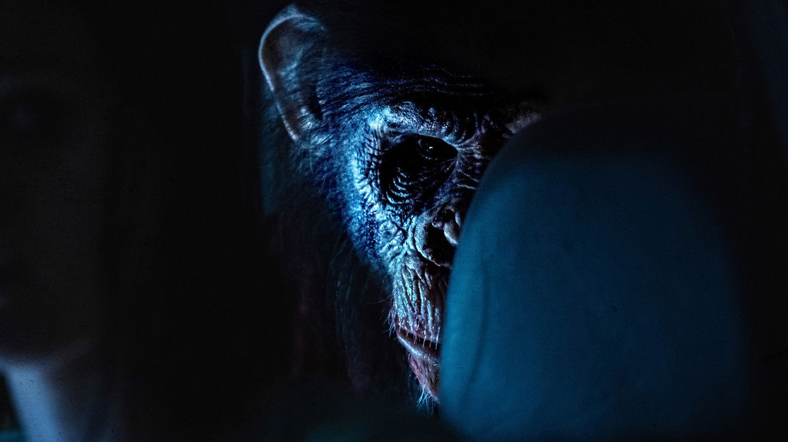
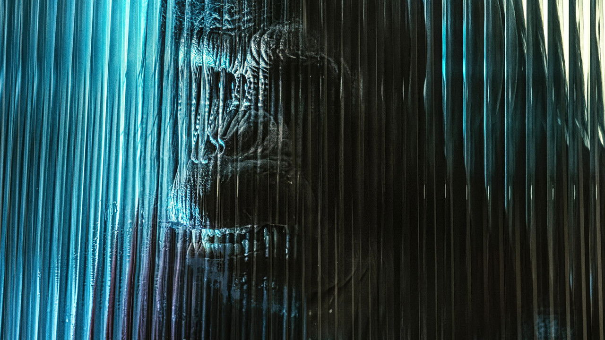
导演与主创 · 他们的历史作品
短评（轻微剧透）
89 分钟，没有废话，这大概是它最值得夸的地方。开场直接闪进第一次杀戮，然后立刻把你丢进那栋房子——罗伯茨很清楚你要什么，就给你什么。它真正厉害的一笔是「悲伤」：本不是恶魔，是家人，是被感染的动物，所以每次它扑过来，你同时觉得恐怖和难受。中段有一两处确实掉进了套路（角色非要制造噪音、反复拿不到电话），但每次我都很快又被拉回去。池边那场守株待兔的戏配上合成器配乐，几乎是《万圣节》级别的。今年最被低估的院线恐怖片之一——北美只做了 4100 万，后来在 Paramount+ 榜上待了 100 多天。
为什么值得一看
喜欢《狂犬惊魂》《鲨海》那种「动物失控」恐怖的人；想要一部不用动脑、节奏紧凑、89 分钟解决战斗的片子。R 级，血腥与暴力直接，心理承受力低的慎选。
黄金时段 Primetime
2006 年，一档电视节目把「抓坏人」做成了收视率。
剧情梗概
故事回到 2006 年。记者克里斯·汉森想重新定义调查类电视，于是推出了 NBC 的《To Catch a Predator》：工作人员在网上伪装成未成年人，把有意图的成年人引到布置好的房子里，摄像机一开，汉森从门后走出来。项目组里还有个叫丹·普拉姆的年轻演员，负责演诱饵。节目火了，然后所有事情开始失控。
亮点
- 纪录片导演兰斯·奥本海姆（《天堂某处》《SPERMWORLD》）的剧情片处女作，入围第 83 届威尼斯电影节主竞赛，角逐金狮。
- 罗伯特·帕丁森同时担任制片人，演克里斯·汉森；阿里·艾斯特（《遗传厄运》《仲夏夜惊魂》）也挂名制片。
- 配角阵容很怪也很好：梅里特·韦弗、斯凯勒·吉桑多、安娜·法瑞斯、博基姆·伍德拜因，歌手 Phoebe Bridgers 也出演，连前 NBC 高管 Jeff Zucker 都演了他自己。
导演与主创 · 他们的历史作品


短评（轻微剧透）
目前只有威尼斯首映的口碑，正式评分尚未稳定，所以我不装作看过——这是这份片单里最「赌」的一部，放进来的理由是主创配置太值得押。有意思的地方在于它选的切口：不是去审判节目里那些被抓的人（那太容易了），而是拍「把正义做成综艺」这套机制本身。奥本海姆拍纪录片出身，最擅长的就是让真实人物在自己布置好的场景里慢慢露馅，这一套搬到剧情片上，理论上非常对路。等 9 月 25 日上映后值得第一时间补看。
为什么值得一看
A24 粉丝、罗伯特·帕丁森的演技粉；对媒体伦理、真人秀与司法边界有兴趣的人。题材涉及儿童性诱捕，心理不适预警；建议上映后先看首批口碑再决定。
逃出布迪秀 Buddy
那只橙色独角兽，不打算让他们走。
剧情梗概
一群人意外掉进了一档诡异的老式儿童节目里。画风甜腻、色彩饱和，主角是一只叫巴迪的软萌橙色独角兽，主持着一档教小朋友唱歌认字的热闹秀场——只不过规则是：不配合演出就会被猎杀，死了的人还会被节目直接替换成新角色。他们被困在这个虚假片场里，一边躲玩偶的追杀，一边找出口。
亮点
- 卡斯帕·凯利（《太多厨师》那支疯传短片）的第二部长片，把「吉祥物恐怖」（Mascot Horror）这个亚类型第一次认真搬上了院线。
- 克里斯汀·米利欧缇（《棕榈泉》《企鹅人》）演女主角格蕾丝，她是这群人里最先意识到「这不是梦」的那个。
- 它真正可怕的不是玩偶，是「被迫快乐」——那套儿童节目式的热情越是无害，拒绝配合的代价就越荒诞。
导演与主创 · 他们的历史作品

短评（轻微剧透）
评价分歧很明确（影评人 88%、观众 77%，褒贬不一），分歧点基本在「荒诞喜剧」和「恐怖片」的比例上。我站喜欢这一边：凯利最擅长的就是让一个无害的符号慢慢裂开，而这次他把这个「慢慢」拉长到了 95 分钟——前 30 分钟你会笑，中间 30 分钟你会开始不确定该不该笑，最后 30 分钟笑不出来了。它不吓人到睡不着，但那种「被要求一直开心」的窒息感，会让人想起某些工作场合和朋友聚会。看完你会对所有橙色毛绒玩具多一份警惕。
为什么值得一看
喜欢《太多厨师》式荒诞恐怖的人；想看一部不严肃、但有点东西的午夜场。血腥度与荒诞度都偏高，喜欢写实恐怖的会觉得太闹。
燃烧吧！爸爸 Burn, Daddy, Burn
父亲的头盖骨要敲碎了才放得进骨灰盒，而母女俩还没来得及吵完。
剧情梗概
即将大学毕业的顾立言正对前途一头雾水，父亲顾卫星突然走了。她不得不和精明要强的母亲吴开蒂一起，去应付一整套繁琐到荒诞的丧葬流程。更离谱的是，父亲生前偷偷组建的「治丧委员会」居然登门了。形形色色的客人、哭笑不得的状况、一个接一个的意外——母女俩就在这片失序里，一点点拼凑出父亲完整的样子，也重新看见彼此。
亮点
- 编剧张笑影把自己在父亲离世后的真实经历写进了剧本——她很长时间感受不到悲伤，直到某天翻到父亲在《追忆似水年华》上写的批注。
- 文淇和倪虹洁的母女档是最大的看点：一个冷淡疏离，一个用「表演型坚强」硬扛，两人有大量沪语对嘴戏。倪虹洁与喻恩泰时隔二十年再组夫妻，是《武林外传》的一记回响。
- 入围第 28 届上海国际电影节金爵奖主竞赛，并作为第 20 届 FIRST 青年电影展闭幕特别放映片。导演刘潇阳最初给这片子起的名字叫《敲碎爸爸的头盖骨》。
导演与主创 · 他们的历史作品
短评（轻微剧透）
它最厉害的地方是「不煽」——全片没有一场嚎啕大哭，悲伤全被塞进了荒诞里：进门祭拜要在屋里抽烟，出殡的钉子总是砸偏，为了捉一只小虫手忙脚乱。这种处理有风险，有人会觉得「死亡不该被喜剧化」，但导演要说的其实是另一件事：每个人面对离别的节奏不一样，不是先哭的人更爱。文淇那场抱着骨灰盒的无台词眼神戏被倪虹洁点名称赞，我也信——她演的是那种「不知道该哭还是该笑、该靠近还是该逃」的状态，而这大概是当代年轻人面对至亲离世最诚实的样子。海边那场第二次告别是全片的呼吸口。
为什么值得一看
想在哭之前先笑一场的人；和父母关系复杂、或者刚刚经历过告别的人（可能会有点疼）。沪语对白占比不低，介意方言的注意；目前仍处点映期、评分人数较少，公映后分数会浮动。